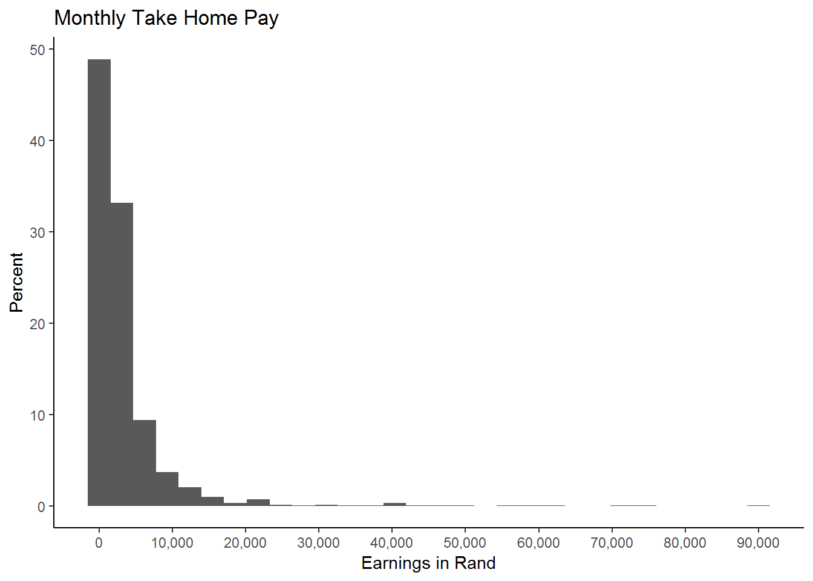
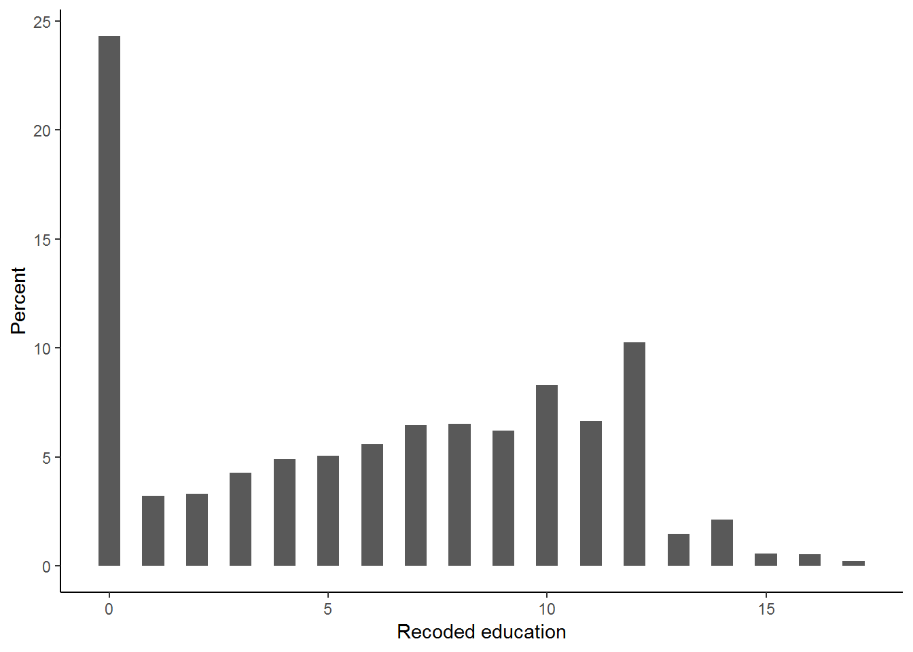
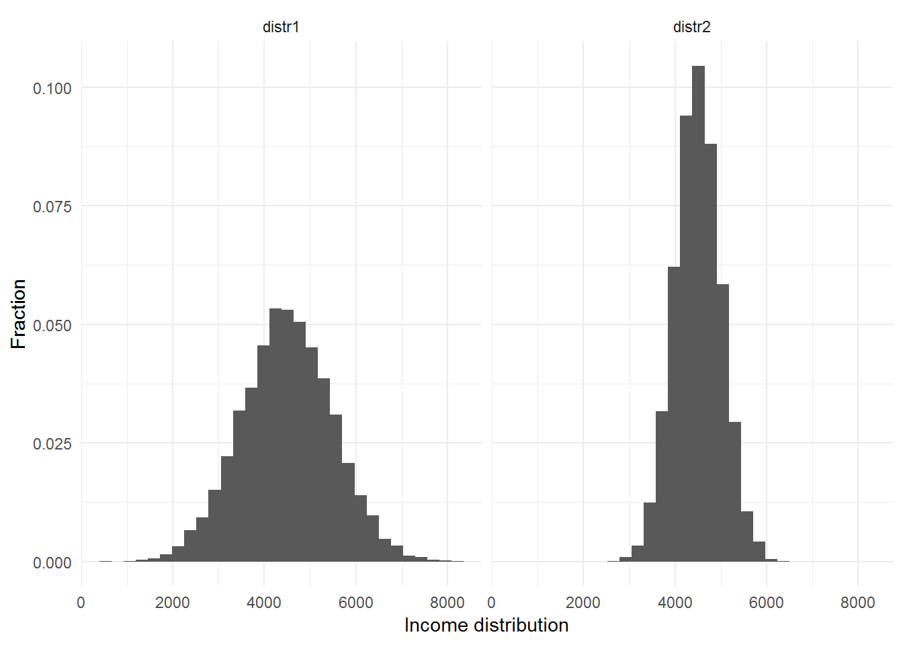
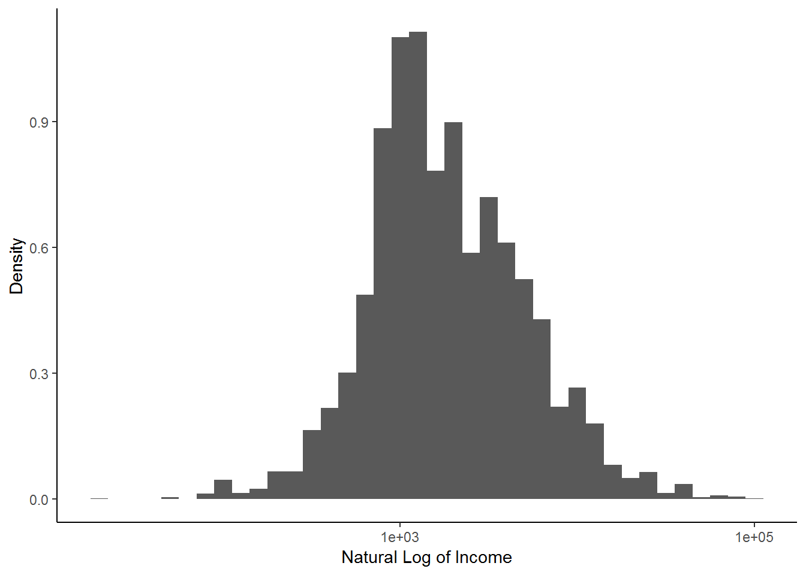
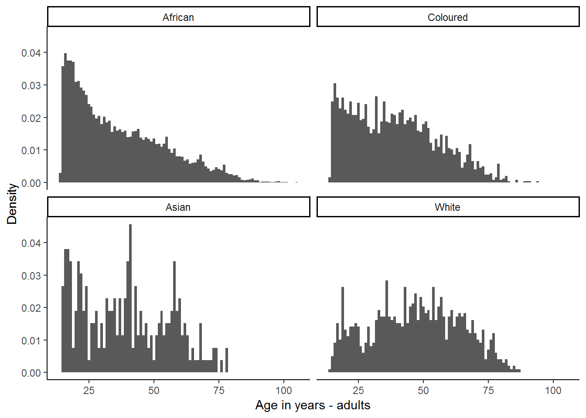

5 Measures of central tendency and variability
5.1 Getting ready
In the previous chapters we generated some variables and ran some commands that will influence the results that we get in this chapter. If you are starting a new session of R, please run the following lines of code before you begin the chapter. Make sure that you remember what each line of code is doing.
library(foreign)
library(tidyverse)## -- Attaching packages --------## v ggplot2 3.0.0 v purrr 0.2.5
## v tibble 1.4.2 v dplyr 0.7.6
## v tidyr 0.8.1 v stringr 1.3.1
## v readr 1.1.1 v forcats 0.3.0## -- Conflicts -----------------
## x dplyr::filter() masks stats::filter()
## x dplyr::lag() masks stats::lag()nids<-read.dta("./data/nids.dta", convert.factors=FALSE)
nids<-nids%>%
arrange(hhid, pid)%>%
group_by(hhid) %>%
mutate(hhrestrict = 1:n()) %>%
mutate(hhrestrict = ifelse(hhrestrict==1,1,0))
###Creating a BMI variable - from chapter 2 ***
#Height
nids<-nids %>%
mutate(height = ifelse (w1_a_n1_1 >= 0 & w1_a_best_age_yrs >= 20, w1_a_n1_1/100, NA))
#Weight
nids<-nids %>%
mutate(weight = ifelse (w1_a_n2_1 >= 0 & w1_a_best_age_yrs > 20, w1_a_n2_1, NA))
#BMI
nids<-nids %>%
mutate(bmi = weight/height^2)
#Age
nids<-nids%>%
mutate(age_adult = ifelse(w1_a_best_age_yrs<0,NA, w1_a_best_age_yrs))
#Age bins
nids$age_bins<-NA
nids$age_bins[which(nids$w1_r_best_age_yrs>=20 & nids$w1_r_best_age_yrs<=29)]<-1
nids$age_bins[which(nids$w1_r_best_age_yrs>29 & nids$w1_r_best_age_yrs<=39)]<-2
nids$age_bins[which(nids$w1_r_best_age_yrs>39 & nids$w1_r_best_age_yrs<=49)]<-3
nids$age_bins[which(nids$w1_r_best_age_yrs>49 & nids$w1_r_best_age_yrs<=59)]<-4
nids$age_bins[which(nids$w1_r_best_age_yrs>59 & nids$w1_r_best_age_yrs<=69)]<-5
nids$age_bins[which(nids$w1_r_best_age_yrs>69 & nids$w1_r_best_age_yrs<=120)]<-6
nids$age_bins <- factor(nids$age_bins, levels = 1:6, labels = c("20 - 29 yrs","30 - 39 yrs", "40 - 49 yrs", "50 - 59 yrs", "60 - 69 yrs", "70 - 120 yrs"))
nids <- nids%>%
rename(race = w1_best_race,
age = w1_r_best_age_yrs,
gender = w1_r_b4,
province = w1_hhprov,
hhincome = w1_hhincome) %>%
mutate(gender = factor(gender, levels = 1:2, labels = c("Male", "Female")),
race = factor(race, levels = 1:4, labels = c("African", "Coloured","Asian", "White")),
province = factor(province, levels=1:9, labels = c("Western Cape","Eastern Cape","Northern Cape","Free State","KwaZulu-Natal","North West","Gauteng","Mpumalanga","Limpopo")),
w1_hhgeo = factor(w1_hhgeo, levels = 1:4, labels = c("Rural formal", "Tribal authority areas","Urban formal", "Urban informal")))5.2 Introduction
In Chapter 3, we learned about the different variable types that exist in the NIDS data set, about different types of missing data, and about the commands that enable us to see frequency distribution tables. In chapter 4 we learned how to produce several types of simple graphs. Based on this knowledge, we are going to start learning how to do some basic statistical analysis, using measures of central tendency and variability.
As the name NIDS (National Income Dynamics Study) suggests, there are a great many questions that researchers wish to address regarding income levels. A few examples of questions we might wish to investigate using the data on individual monthly income (w1_fwag - the monthly take home pay of main job) are the following:
What is the average monthly individual income in South Africa?
Is the distribution of income in South Africa somewhat equal or are incomes much higher for the rich than for the poor? How much higher?
How does the average income in South Africa vary by racial group and how does income inequality vary within racial groups in South Africa?
How does income in South Africa vary by province? Do we live in a province that has above or below average income levels?
We will start this chapter considering continuous variables. Then we will learn some new commands that make analyzing data easier. Lastly, we will go through some of the key methods that will enable us to analyze categorical variables effectively.
5.3 Understanding distributions of continuous variables
For now, let’s focus on monthly individual income (w1_fwag). Let’s start by seeing what the distribution of income looks like. In the graph below, we find that almost 50 percent of the observations are in the first bar (which means income is roughly less than 1800 Rand per month.) Also note that only a very small fraction of income earners, earn monthly incomes above 40,000 Rand, in fact the bars themselves are very hard to see on the histogram! It turns out that only one person reports an income of 90,000. The next highest monthly income is 75,000 Rand, which is reported by 3 people and there is no one in NIDS that report a monthly income between these two figures. That is why, in the graph below, there are no bars between 90, 000 and 75,000. All in all, only 9 people report an income over 40, 000 Rand thus it is tempting to simply ignore these high values which seem out of keeping with the rest of the observations. Doing so would certainly produce a much more attractive histogram, that would allow us to focus on the where the bulk of the income values lie. This would, however, be a grave mistake; we can’t just arbitrarily delete observations no matter how “unattractive” they may seem! Later we will experiment with different ways of handling these “outlying” data values, but for now, the data are what they are.
Below we give the code you could enter into your R Script in order to get the graph.
library(scales)##
## Attaching package: 'scales'## The following object is masked from 'package:purrr':
##
## discard## The following object is masked from 'package:readr':
##
## col_factorggplot(nids, aes(x = w1_fwag, y = (..count..)/sum(..count..)*100)) +
geom_histogram() +
scale_x_continuous(breaks=seq(0,90000,10000), labels = comma) +
xlab("Earnings in Rand") +
ylab("Percent") +
ggtitle("Monthly Take Home Pay") +
theme_classic()## `stat_bin()` using `bins = 30`. Pick better value with `binwidth`.## Warning: Removed 26671 rows containing non-finite values (stat_bin).
5.4 Continuous variables and recoding
While histograms are extremely useful in giving us a quick and clear overview of a particular variable, often we will want to delve a little deeper and obtain more precise results. For instance, we might wish to know exactly how many individuals have an income below R1500. Or we may want to know what percentage of the sample is ‘middle class’, as opposed to ‘lower class’ and ‘upper class’. We learnt in chapter 3 that for categorical variables we can use table to get a good idea of the distribution of the variable, but if you try to use table for a continuous variable the result is not very useful. Try this for yourself!
We get the clue for how to deal with a continuous variable from the way a histogram works. Basically, a histogram divides the range of the variable up into bins and then counts how many values fall into each bin (for instance, a bin might be an income bracket of R2000). If we use this strategy and recode our income variable into bins then we will be able to tabulate the recoded variable and obtain meaningful results. Note that the choice of bin size is essentially arbitrary and depends on the context. Here, we will divide our income variable into only three bins for simplicity. We will use the following arbitrarily defined bins:
- 0 - R1500 (“Lower Class”)
- R1500 - R4500 (“Middle Class”)
- R4500 + (“Upper Class”) We generate a new variable that divides the sample into the three bins (and leaves those with dot-missing values as dot-missing).
summary(nids$w1_fwag)## Min. 1st Qu. Median Mean 3rd Qu. Max. NA's
## 20.0 936.7 1600.0 3233.4 3550.0 90000.0 26671nids<-nids %>%
mutate(class = case_when(
w1_fwag<=1500 ~ 1,
w1_fwag>1500 & w1_fwag<=4500 ~ 2,
w1_fwag>4500 ~ 3
)) %>%
mutate(class=factor(class, levels=1:3, labels = c("Lower Class","Middle Class","Upper Class")))We need to be careful about given what we know about missing values and non‐response codes in the NIDS dataset? Since we know that non‐responses are coded as negative numbers, we have to be careful that we are not including all the non‐responses in the lowest class category. However, when we used summary before running recode, we saw that the range of the w1_fwag variable is [20,90000]. This tells us that there are no non‐responses recorded for this variable.
Let’s have a look at the variable that we have created.
table(nids$class)##
## Lower Class Middle Class Upper Class
## 2167 1503 829or
nids %>%
filter(!is.na(class)) %>%
group_by(class) %>%
summarise(freq=n()) %>%
mutate(percent = round(freq/sum(freq)*100,2), cum_percent = round(cumsum(freq)/sum(freq)*100,2))## # A tibble: 3 x 4
## class freq percent cum_percent
## <fct> <int> <dbl> <dbl>
## 1 Lower Class 2167 48.2 48.2
## 2 Middle Class 1503 33.4 81.6
## 3 Upper Class 829 18.4 100Notice that the total number of individuals with a class value is 4 499. However, we know that our sample has over 30 000 individuals in it. We know that all the excluded individuals are NA-missing. You can check that the number of NA-missings are the same for the original income variable (w1_fwag) and our newly created class variable.
Recall that our objective in this section was to learn how to take a continuous variable and recode it in a way that made it easier to interpret. There are many ways of extracting information from a continuous variable - what we have done is one of them. We can now say that of the portion of the sample with recorded income levels, 48% earn below R1500, 33% between R1500 and R4500, and 18% above R4500. However, we must keep in mind the large proportion of the population with no recorded income value. Before thinking about publishing these results, we would need to investigate where all the NA-missings come from, however we will not do that here since you have already learnt how to go about conducting such an investigation.
5.5 Summarise: by - summary (base R) and group_by - summarise (dplyr)
We have just seen one of the ways that you can summarize the information contained in a continuous variable. Upon meeting a new variable, R has a several commands that enable you to get acquainted with your new friend - we have already learnt head, tail, e.t.c. Here we do more exploration using the summary() command. In R, type:
summary(nids$w1_fwag)## Min. 1st Qu. Median Mean 3rd Qu. Max. NA's
## 20.0 936.7 1600.0 3233.4 3550.0 90000.0 26671We see that the average monthly income is R3233.40. There are two nice features of summary. First, summary tells us the range of the variable. For example, when we typed summary(nids$w1_fwag), we learned that w1_fwag ranged between 20 and 90000. Second, summary works with the by() option. We can compute the mean by each of categories of another variable, e.g. race (w1_best_race), w1_hhprov (province variable), or any other distinguishing characteristic. To summarise w1_fwag by race, type:
by(nids[, c("w1_fwag")], nids$race, summary)## nids$race: African
## w1_fwag
## Min. : 20
## 1st Qu.: 850
## Median : 1400
## Mean : 2494
## 3rd Qu.: 2995
## Max. :90000
## NA's :19227
## --------------------------------------------------------
## nids$race: Coloured
## w1_fwag
## Min. : 55.0
## 1st Qu.: 887.6
## Median : 1400.0
## Mean : 2387.3
## 3rd Qu.: 2700.0
## Max. :42000.0
## NA's :3134
## --------------------------------------------------------
## nids$race: Asian
## w1_fwag
## Min. : 920
## 1st Qu.: 3000
## Median : 4500
## Mean : 7550
## 3rd Qu.: 9338
## Max. :40000
## NA's :346
## --------------------------------------------------------
## nids$race: White
## w1_fwag
## Min. : 100
## 1st Qu.: 3766
## Median : 6952
## Mean : 9241
## 3rd Qu.:11000
## Max. :75000
## NA's :992We see that the average monthly income of Africans, Coloureds, Indians/Asians, and Whites, respectively are 2494, 2387, 7550, and 9241.4 Rand respectively.
Alternatively, you can use group_by and summarise functions from the library dplyr as follows:
nids %>%
select(hhid,race, w1_fwag) %>%
group_by(race) %>%
summarise(min=min(w1_fwag, na.rm=TRUE),
median=median(w1_fwag, na.rm=TRUE),
mean=mean(w1_fwag, na.rm=TRUE),
max=max(w1_fwag, na.rm=TRUE),
std.dev=sd(w1_fwag, na.rm=TRUE))## # A tibble: 5 x 6
## race min median mean max std.dev
## <fct> <dbl> <dbl> <dbl> <dbl> <dbl>
## 1 African 20 1400 2494. 90000 4104.
## 2 Coloured 55 1400 2387. 42000 3033.
## 3 Asian 920 4500 7550. 40000 7522.
## 4 White 100 6952. 9241. 75000 9504.
## 5 <NA> 1160 1622. 1576. 1900 348.Sometimes, it will be helpful to compute means (or other statistics) by groups that we construct. For example, suppose we wanted to summarise to give income levels of different age groups - e.g. under 20, 21-40, 41-60, and over 60. We need to construct these age groups and then compute the means. As usual there are various ways to do this. We learnt how to use the square brackets to subset or dplyr’s case_when. Below is the code for generating an NA-missing variable and replacing it.
nids$agegrp<-NA
nids$agegrp[which(nids$age>=0 & nids$age<=20)]<-1
nids$agegrp[which(nids$age>20 & nids$age<=40)]<-2
nids$agegrp[which(nids$age>40 & nids$age<=60)]<-3
nids$agegrp[which(nids$age>60 & nids$age<=120)]<-4To factor variable:
nids$agegrp<-factor(nids$agegrp, levels=1:4, labels=c("0 - 20 yrs", "21 - 40 yrs","41 - 60 yrs", "60+ yrs"))nids%>%
group_by(agegrp)%>%
summarise(Mean=mean(w1_fwag, na.rm=TRUE),
Std.Dev=sd(w1_fwag, na.rm=TRUE),
Min=min(w1_fwag, na.rm=TRUE),
Max=max(w1_fwag, na.rm=TRUE))## # A tibble: 5 x 5
## agegrp Mean Std.Dev Min Max
## <fct> <dbl> <dbl> <dbl> <dbl>
## 1 0 - 20 yrs 1357. 1057. 80 7000
## 2 21 - 40 yrs 3009. 4803. 20 90000
## 3 41 - 60 yrs 3851. 6141. 88 75000
## 4 60+ yrs 2773. 3116. 280 18000
## 5 <NA> 1226. 1678. 100 7000This gives us the average income levels for each of our age categories. For instance, 41 - 60 year olds in the sample, who had a reported income level, earned R3851 on average. Notice that age category 0 - 20 years reports a mean of R1356, but it would be strange if the average person younger than 20 has an income of R1356. What’s going on here? If you look at the Obs category, you see that the group only has 153 respondents with reported income data. This is primarily because most people below the age of 20 do not work in the formal sector and therefore are NA-missing. The individuals who don’t report any income are not included in calculating the mean.
5.6 Medians and modes of continuous variables
Up to now, the only measure of central tendency that we have examined is the mean. There are other measures and the two that we wish to examine now are the median and the mode of a distribution. The median of a distribution is the value for which half the observations are greater and half are less. If observations are symmetrically distributed, the median and the mean will be the same. If the distribution of a variable is quite skewed, however, the median and the mean will be quite different. In general, medians are sometimes used instead of means if one wants a measure that will be robust to large outliers like the ones we saw at the beginning of this chapter. That is, we want a measure that is not very sensitive to extraordinary values in the distribution.
Take for example the hypothetical situation in which you have ten people with an income of R100 and one with income of R1000 000. The mean will be R91 000 even though ten out of the eleven people earn less than one hundredth of this amount. Sometimes, it will be more informative to talk about the median of the distribution - in this case the median would be R100. While this example uses unrealistically extreme values, we will see the same principle holds in the actual data below.
Let’s consider the NIDS income variable (w1_fwag) again. In case you have not noticed it in the previous outputs, the summary() command produces both the mean and median. Type:
summary(nids$w1_fwag)## Min. 1st Qu. Median Mean 3rd Qu. Max. NA's
## 20.0 936.7 1600.0 3233.4 3550.0 90000.0 26671Note that the median income is R1600. The median income is a lot less than the mean income. What is going on here? Have a look at the income histogram that we created in the first section of this chapter. The graph shows us that most of the income values are less than R20 000, with a couple of much larger values - particularly one of R90 000. This extremely large value is inflating the mean of the distribution. In contrast, the median treats it as just one more value above the “half way” mark. For many variables with skewed distributions, the median is a very useful statistic. The mode of a distribution is the value that appears most often in the distribution. The mode is a seldom used measure, but we should be aware of it. Let’s consider the education variable - w1_best_edu.
The mode of this variable represents the most commonly reported educational level amongst NIDS respondents. There is no simple way to compute the mode in R. we can summarise the grouped categories of w1_best_edu and see which one has the most frequency.
nids%>%
group_by(w1_best_edu) %>%
summarise(n=n())## # A tibble: 31 x 2
## w1_best_edu n
## <int> <int>
## 1 -9 132
## 2 -8 1
## 3 -5 1
## 4 -3 710
## 5 0 924
## 6 1 883
## 7 2 905
## 8 3 1175
## 9 4 1340
## 10 5 1381
## # ... with 21 more rowsBy examining the entire frequency distribution, we should note that the mode of w1_best_edu is 25. In other words a large number of respondents (5731) reported “no schooling” as their level of education, far more than for any other category. That’s not very surprising since infants and toddlers are included in the sample. What is more surprising is the modal level of education for adults 21 and older. Type:
nids%>%
filter(age >= 21 & !is.na(age))%>%
group_by(w1_best_edu) %>%
summarise(n=n())%>%
print()## # A tibble: 29 x 2
## w1_best_edu n
## <int> <int>
## 1 -9 57
## 2 -3 15
## 3 0 4
## 4 1 101
## 5 2 241
## 6 3 394
## 7 4 537
## 8 5 626
## 9 6 755
## 10 7 996
## # ... with 19 more rowsAs we see the table above, the modal value is still 25. Therefore, even amongst adults, the most common category reported by respondents over the age of 21 is having no education at all.
5.7 Example: recoding the education variable
Suppose we want to know the average level of education for individuals aged 21 or over in South Africa. This entails computing the mean of an education variable. When we compute means for continuous variables, we need to be wary of how the variables are coded. In this extended example, we will consider the education variable, w1_best_edu.
We need to consider how the education variable was coded. For this, we need to refer to the survey documents, i.e. questionaires.
Figure 5.1: Education codes
From the table above we note that a code of “0” indicates Grade R/0, a code of 3 indicates Grade 3 and so on. The code usually increases by one for each year of schooling up to a value of 12. Codes greater than 12 do not necessarily indicate more years of schooling; for example, a code of 25 represents no schooling. We also observe that negative numbers are assigned for non-responses. In addition, there are several NA-missing values.
At this point you may be asking: how then, should we compute the average education level for households in the survey? What we really need here is a variable that ranks different educational levels on some numerical scale. There is no single answer on how to create this variable. Below is one answer, worked out in R.
We begin by creating a new education variable that we call educ_new and setting it equal to the original education variable - w1_best_edu. We will then replace several of the values in order to make our mean meaningful.
We want to create an education variable that is able to rank in some way different educational qualifications. One of the easiest ways to do this is to consider the number of years spent on education up to the point of the level of the qualification. We know that starting from Grade 0 (Code 0) the code increases by one for each year of schooling up to a value of 12. So the education codes for Grade 0 to Grade 12 already have the intrinsic ordering we want.
Next we elect (rather arbitrarily) to combine those who have no reported education with those whose highest reported education level was Grade R/0.
nids$educ.new<-nids$w1_best_edu
nids$educ.new[which(nids$w1_best_edu == 25)]<-0Next, we set the negative values to “missing”.
nids$educ.new[which(nids$w1_best_edu <0)]<-NAWe also set the variable coded 24 (“other”) to “missing” since we don’t know how to interpret “other.”
nids$educ.new[which(nids$w1_best_edu == 24)]<-NAWe still are not done. Next we look at categories where respondents have a diploma or certificate but did not complete their schooling up to Grade 12. Here we have to make some educated but essentially subjective decisions on how to code these educational qualifications. This would in practice require researching the South African education system in order to inform these decisions. The code 13 “NTC 1” (note NTC means National Technical Certificate) and code 16 “Certificate with less than Grade 12” are assessed as being more or less equivalent to a Grade 10 qualification and so we assign all of these individuals with a value of “10”. In addition code 14 “NTC2” and code 17 “Diploma with less than Grade 12” are thought to be somewhat equivalent to a Grade 11 education and so we assign individuals in these categories a value of 11. Finally, code 15 “NTC 3” is regarded to be more or less equivalent to Grade 12 so NTC 3 individuals are recoded with a value of “12”.
nids$educ.new[which(nids$w1_best_edu == 13 | nids$w1_best_edu == 16)]<-10
nids$educ.new[which(nids$w1_best_edu == 14 | nids$w1_best_edu == 17)]<-11
nids$educ.new[which(nids$w1_best_edu == 15)]<-12But what about all individuals who have completed Grade 12 plus have additional qualifications? Once again we make some educated but essentially subjective assertions. Those who have a Certificate in addition to Grade 12 are assigned a code of 13, while those who have a diploma with Grade 12 are assigned a code of 14. A Bachelors Degree is assigned a value of 15 - Grade 12 plus 3 more years of education, while those with an Honours Degree or a Bachelors Degree and Diploma are assigned values of 16. Finally, Higher Degrees such as Masters of Doctorate are assigned a code of 17 (Although we could have just as easily assigned this last category a code of 18, if for instance you feel strongly that Masters is most commonly a two year course).
nids$educ.new[which(nids$w1_best_edu == 18)]<-13
nids$educ.new[which(nids$w1_best_edu == 18)]<-13
nids$educ.new[which(nids$w1_best_edu == 19)]<-14
nids$educ.new[which(nids$w1_best_edu == 20)]<-15
nids$educ.new[which(nids$w1_best_edu == 21 | nids$w1_best_edu == 22)]<-16
nids$educ.new[which(nids$w1_best_edu == 23)]<-17To review where we stand, type:
nids%>%
group_by(educ.new)%>%
summarise(n=n())## # A tibble: 19 x 2
## educ.new n
## <dbl> <int>
## 1 0 6655
## 2 1 883
## 3 2 905
## 4 3 1175
## 5 4 1340
## 6 5 1381
## 7 6 1531
## 8 7 1766
## 9 8 1782
## 10 9 1701
## 11 10 2270
## 12 11 1821
## 13 12 2806
## 14 13 407
## 15 14 582
## 16 15 158
## 17 16 145
## 18 17 67
## 19 NA 3795We will see that we now have a variable whose values are much more meaningful than those of the original w1_best_edu.
The distribution of education levels is graphed below.
nids%>%
ggplot(., aes(x=educ.new)) +
geom_histogram(aes(y = ..count..*100/sum(..count..)), binwidth=0.5)+
xlab("Recoded education") +
ylab("Percent") +
theme_classic()## Warning: Removed 3795 rows containing non-finite values (stat_bin).
In the above histogram, we can see that about 24 percent of the respondents report having zero years of education. The mean education level is found by simply typing:
summary(nids$educ.new)## Min. 1st Qu. Median Mean 3rd Qu. Max. NA's
## 0.000 1.000 6.000 6.037 10.000 17.000 3795We see that respondents have, on average, an education level of 6.04, somewhere close to having completed Grade 4. The correction for the strange coding of w1_best_edu resulted in a lower mean level of education and this is what we would expect since the original variable coded no schooling with a higher value than a completed university degree.
A more interesting question is the following:
What is the mean level of education in South Africa for individuals 21 years old and older?
nids%>%
filter(age >= 21 & !is.na(age))%>%
select(educ.new)%>%
ungroup() %>%
summarise(Mean=mean(educ.new, na.rm=T))## Adding missing grouping variables: `hhid`## # A tibble: 1 x 1
## Mean
## <dbl>
## 1 7.68You should have found that the average education level of adults was 7.68 - the average respondent over the age of 21 (adult) has completed grade 5. What do we think this statistic will be 20 years from now when those who are now infants reach the age of 21?
To get an indication of whether today’s youth are getting more education on average, let’s see what the average education level of 23 year olds is as most people have completed their education by this age.
nids%>%
filter(age == 23 & !is.na(age))%>%
select(educ.new)%>%
ungroup() %>%
summarise(Mean=mean(educ.new, na.rm=T))## Adding missing grouping variables: `hhid`## # A tibble: 1 x 1
## Mean
## <dbl>
## 1 10.3Although this is a crude measure, it suggests that today’s youth are on average getting a grade 8, which is over two years more than the average adult in the sample.
As an exercise, try the following question:
1. Compute the mean education level of adults (21 and older) by gender and of non-adults (under 21) by gender. How about the differences for children between the ages of 6 and 10?
What do the answers to this exercise suggest for the future?
Question 1 Answer
5.8 Measures of dispersion - variance and standard deviation
So far, we have learned something about the average level of monthly income among individuals in South Africa. Higher incomes are generally a good thing, but from a policy perspective, we will often care about how widely spread the distribution of income is. In an extreme situation, it could be the case that everyone in the country has exactly the same level of income (therefore every individual would have the “mean” as their level of income). That situation could be considered to be perfectly equal distribution of income. Of course, in the real world, individuals and households have vastly different levels of income.
In an effort to clarify this notion of variance consider two theoretical distributions with the same mean, as shown below. Both of these distributions have a mean income of about 4500 Rand. Examine these two distributions.
set.seed(123)
d1<-data.frame(dist="distr1", value=rnorm(10000, 4500, 1000))
d2<-data.frame(dist="distr2", value=rnorm(10000, 4500, 500))
df<-rbind(d1,d2)
ggplot(df, aes(x=value, y=..count../sum(..count..))) +
geom_histogram() +
facet_grid(.~dist) +
labs(x="Income distribution", y="Fraction") +
theme_minimal()## `stat_bin()` using `bins = 30`. Pick better value with `binwidth`.
Even though both distributions have the same average level of income, we can see that the income inequality is greater in the first graph. If we only computed the mean of each of these (made-up) income variables, we might conclude that these distributions were essentially the same even though the first distribution is clearly more dispersed. The variance is a useful measure of dispersion of a variable - basically, the variance gives an indication of how wide the distribution is. The square root of the variance is termed the standard deviation. A bigger variance always means a larger standard deviation. In the above two distributions, the standard deviation of Income Distribution #1 is 1000 while the standard deviation of Income Distribution #2 is 500. Since the standard deviation of the first distribution is twice as large as that of the second distribution, its variance is about four times as large.
One useful way to think about the standard deviation of a distribution is the following. Suppose that the distribution of a variable is bell-shaped (more formally termed a normal distribution.) If we picked randomly from the normal distribution, two thirds of the time we would pick a value that was within two standard deviations (two times the standard deviation) from the mean of the distribution. For the case of Income Distribution #1 above, this means that if we randomly picked a person with an income level from this distribution, two out of every three people we pick should have an income within 2000 Rand of the mean income of 4500 Rand - i.e. between R2500 and R6500. In contrast, two thirds of the people picked from distribution 2 should have an income level between R3500 and R5500.
In R, the standard deviation of a variable is obtained using the sd() command.
What is the standard deviation of individual monthly income by w1_best_race (now renamed race) in South Africa?
To find out, type:
nids%>%
group_by(race)%>%
summarise(Mean=mean(w1_fwag, na.rm=TRUE),
Std.Dev=sd(w1_fwag, na.rm=TRUE),
Min=min(w1_fwag, na.rm=TRUE),
Max=max(w1_fwag, na.rm=TRUE))## # A tibble: 5 x 5
## race Mean Std.Dev Min Max
## <fct> <dbl> <dbl> <dbl> <dbl>
## 1 African 2494. 4104. 20 90000
## 2 Coloured 2387. 3033. 55 42000
## 3 Asian 7550. 7522. 920 40000
## 4 White 9241. 9504. 100 75000
## 5 <NA> 1576. 348. 1160 1900We discover that the standard deviation for some of the groups is quite different from others. Put another way, income inequality appears to vary by racial group. For instance, the variation in income amongst Whites is far larger than amongst Africans.
As another exercise, let’s investigate the average household size as well as the standard deviation of household size depending on whether a household lives in a Rural, Tribal Authority, Urban Formal or Urban Informal area. To eliminate the bias of household level variables, we need to create a new household-level household size variable.
nids<-nids%>%
arrange(hhid)%>%
mutate(w1_hhsizer2 = ifelse(hhrestrict == 1, w1_hhsizer, NA))Overall mean:
nids%>%
ungroup() %>%
summarise(Mean=mean(w1_hhsizer2, na.rm=TRUE),
Std.Dev=sd(w1_hhsizer2, na.rm=TRUE),
Min=min(w1_hhsizer2, na.rm=TRUE),
Max=max(w1_hhsizer2, na.rm=TRUE))## # A tibble: 1 x 4
## Mean Std.Dev Min Max
## <dbl> <dbl> <dbl> <dbl>
## 1 3.87 2.56 1 25By w1_hhgeo:
nids%>%
group_by(w1_hhgeo)%>%
summarise(Mean=mean(w1_hhsizer2, na.rm=TRUE),
Std.Dev=sd(w1_hhsizer2, na.rm=TRUE),
Min=min(w1_hhsizer2, na.rm=TRUE),
Max=max(w1_hhsizer2, na.rm=TRUE))## # A tibble: 4 x 5
## w1_hhgeo Mean Std.Dev Min Max
## <fct> <dbl> <dbl> <dbl> <dbl>
## 1 Rural formal 3.24 2.37 1 16
## 2 Tribal authority areas 4.59 2.85 1 25
## 3 Urban formal 3.48 2.22 1 17
## 4 Urban informal 3.70 2.53 1 18#by(nids[, c("w1_hhsizer2")], nids$w1_hhgeo, summary)We note that there is a pretty big difference in average family size depending on whether a household lives in tribal authority or urban informal area. The average household size is about 4.6 persons for the former and about 3.7 overall for the latter. Notice also that the variation in household size is the smallest in urban formal areas and the largest in tribal authority areas.
Examining the median household size instead of the mean gives a similar picture. (Try it, just add the median () function to the above command.)
5.9 Handling outliers
The mean can be very sensitive to data points that are very, very different from all the other observations in the distribution. We refer to these extreme data points as “outliers.” There are several large literatures in statistics that deal with outliers. These include statistical measures that are not especially sensitive to outliers– robust statistics, as well as literatures on how to identify outliers and what to do once they are found. Reviewing this literature is beyond the scope of this chapter, but we want to be alert to the presence of outliers and aware of how they can impact some of our results. There are, in general, two ways we will deal with outliers. One is to use measures that are not sensitive to them, such as the median instead of the mean, and the other is to remove their impact (usually by setting them equal to a missing value.)
Sometimes it will be obvious when an outlier is simply miscoded data and hence should be set to missing. If for example, age was reported as 230, we would know that was a miscode. Most of the NIDS data set has been “cleaned” and we are not aware of many miscodes. (If you think you find some, email us.) This doesn’t mean that outliers won’t matter. Consider our initial example of income, w1_fwag. Examine what happens to mean income if we drop just the highest 8 income levels of the 4499 observations. Since we will want to compare the original income measure to our truncated measure, we want to create a new income measure without writing over the old one:
nids<-nids%>%
mutate(w1_fwag2 = ifelse(w1_fwag>50000,NA, w1_fwag))We can then summary() the two variables:
summary(nids[,c("w1_fwag", "w1_fwag2")])## w1_fwag w1_fwag2
## Min. : 20.0 Min. : 20.0
## 1st Qu.: 936.7 1st Qu.: 932.3
## Median : 1600.0 Median : 1600.0
## Mean : 3233.4 Mean : 3114.0
## 3rd Qu.: 3550.0 3rd Qu.: 3500.0
## Max. :90000.0 Max. :50000.0
## NA's :26671 NA's :26679Simply by dropping these 8 observations out of 4499, our mean has been reduced by over R100.
And to see how the outliers change our results for how average income varies by race:
by(nids[, c("w1_fwag", "w1_fwag2")], nids$race, summary)## nids$race: African
## w1_fwag w1_fwag2
## Min. : 20 Min. : 20
## 1st Qu.: 850 1st Qu.: 850
## Median : 1400 Median : 1400
## Mean : 2494 Mean : 2382
## 3rd Qu.: 2995 3rd Qu.: 2946
## Max. :90000 Max. :40000
## NA's :19227 NA's :19232
## --------------------------------------------------------
## nids$race: Coloured
## w1_fwag w1_fwag2
## Min. : 55.0 Min. : 55.0
## 1st Qu.: 887.6 1st Qu.: 887.6
## Median : 1400.0 Median : 1400.0
## Mean : 2387.3 Mean : 2387.3
## 3rd Qu.: 2700.0 3rd Qu.: 2700.0
## Max. :42000.0 Max. :42000.0
## NA's :3134 NA's :3134
## --------------------------------------------------------
## nids$race: Asian
## w1_fwag w1_fwag2
## Min. : 920 Min. : 920
## 1st Qu.: 3000 1st Qu.: 3000
## Median : 4500 Median : 4500
## Mean : 7550 Mean : 7550
## 3rd Qu.: 9338 3rd Qu.: 9338
## Max. :40000 Max. :40000
## NA's :346 NA's :346
## --------------------------------------------------------
## nids$race: White
## w1_fwag w1_fwag2
## Min. : 100 Min. : 100
## 1st Qu.: 3766 1st Qu.: 3760
## Median : 6952 Median : 6800
## Mean : 9241 Mean : 8801
## 3rd Qu.:11000 3rd Qu.:11000
## Max. :75000 Max. :50000
## NA's :992 NA's :995These are significant differences in the mean and median income, on the other hand, barely differs at all between w1_fwag and w1_fwag2.
It is always important to be aware of possible outliers in the data and there will be other variables in the NIDS datasets whose means are sensitive to a few very high values. For example, dropping just the top 5 of over 951 observations on monthly income from self employment decreases the mean of these income values by almost 10 percent.
Comparing the mean to the median is a helpful way to gauge the presence of outliers. There are a number of more sophisticated tools in R for examining outliers. These include graphical methods. Graphical methods were introduced in Chapter 5 and we’ll see an example of how useful they can be below.
If we are comfortable with the concept of logarithms, we can also look at the log of w1_fwag. Here is a graph of monthly income with the x-axis calibrated in logs.
nids%>%
ggplot(., aes(x=w1_fwag)) +
geom_histogram(aes(y = ..density..), binwidth=0.1, labels = comma) +
scale_x_log10() +
labs(x="Natural Log of Income",y ="Density") +
theme_classic()## Warning: Ignoring unknown parameters: labels## Warning: Removed 26671 rows containing non-finite values (stat_bin).
An advantage of calibrating the x-axis in logs is that high income outliers don’t have as large an impact on the graph’s orientation. When we work on regression analysis later on this will become very useful method.
5.10 Understanding the distributions of categorical variables
Many variables in NIDS are categorical variables. Examples that we will work with in this subsection include occupation and race. In Chapter 3 we have already investigated frequency distributions of categorical variables. In this section, we ask whether there are statistics analogous to the mean and standard deviation (which we used to describe distributions of continuous variables) that we can use to describe distributions of categorical variables.
We begin with a cautionary note. Put simply, taking the mean of a categorical variable yields nonsense. Consider the race variable - R will let we compute the mean of it. Try the following:
summary(nids$race) #summary factor returns the frequencies## African Coloured Asian White NA's
## 22157 4166 439 1432 2976summary(as.numeric(nids$race))## Min. 1st Qu. Median Mean 3rd Qu. Max. NA's
## 1.000 1.000 1.000 1.331 1.000 4.000 2976We find the mean of the w1_best_race variable is 1.33. What does this mean? As near as we can tell, it means nothing. It certainly does not mean that the average respondent is about halfway between an African and a Coloured respondent. The coding of the race variable was arbitrary. NIDS dataset could just as easily have coded Whites as a 1, Indians & Asians as a 2, Africans as a 3, and Coloureds as a 4. If the mean of a categorical variable is nonsensical, are there other measures that do convey information? There are two - the mode and the range of the distribution.
The mode of the distribution, as we have already mentioned is that value that appears most often in the sample. In R, we can use table() or summary() on the factor variable. To find the mode of the race variable (race) and primary occupation variable (w1_a_e4_code), type:
summary(nids$race)## African Coloured Asian White NA's
## 22157 4166 439 1432 2976table(nids$w1_a_e4_code)##
## -9 -3 1 2 3 4 5 6 7 8 9
## 59 13 147 474 153 328 468 389 492 344 968Or the dplyr group_by summarise approach:
nids %>%
group_by(w1_a_e4_code) %>%
summarise(freq=n()) %>%
na.omit()## # A tibble: 11 x 2
## w1_a_e4_code freq
## <int> <int>
## 1 -9 59
## 2 -3 13
## 3 1 147
## 4 2 474
## 5 3 153
## 6 4 328
## 7 5 468
## 8 6 389
## 9 7 492
## 10 8 344
## 11 9 968Figure 5.2: Occupational Codes
We find that the mode of race is “African” while the mode of the occupation variable is 9 - “Elementary Occupations.”
Just as the mean of the distribution of a categorical variable does not make any sense, neither does the standard deviation. Still, it may be useful to know the range of the values of a categorical variable. That is, what values are spanned by the variable codes? To see the range of a variable, you can simply use the summary() or range() command:
summary(nids$w1_a_e4_code)## Min. 1st Qu. Median Mean 3rd Qu. Max. NA's
## -9.000 4.000 6.000 5.705 9.000 9.000 27335The above result tells us that the occupation variable varies from -9 to 9.
5.11 Worked example 1: Exploring the distribution of satisfaction variable
There are many variables that we will want to explore in the NIDS data set. One that we will work with often in our examples and exercises is the variable w1_a_m5. We have already met this variable in chapter 3. Recall that it measures adults’ satisfaction level with their perceived current quality of life. If we refer to the adult questionnaire Section M, Question 2 we see that respondents were asked: ‘Using a scale of 1 to 10, where 1 means “Very dissatisfied” and 10 means “Very satisfied”, how do you feel about your life as a whole right now?’.
Unlike variables such as age, income, or number of children, the units of measurement for a variable measuring satisfaction may not have been that obvious. In this sense, the “Satisfaction” variable (as we will call it) is not a typical continuous variable. In the language of statistics, it is referred to as an ordinal variable (as opposed to nominal, which has no inherent order). To read more about the subjective wellbeing variables in the NIDS Dataset refer to Discussion Paper 14 of the NIDS survey. The discussion papers are available from the NIDS website.
We will use this variable to “test drive” some of the R commands we have learned. First it is always best to check how the variable is coded in R. To do this we type:
table(nids$w1_a_m5)##
## -9 -8 -5 -3 1 2 3 4 5 6 7 8 9 10
## 1433 163 2 240 1007 701 1246 1867 2558 1803 1633 1305 455 1217As we expect a code of 10 indicates the highest level of satisfaction and a code of 1 indicates the lowest level. In addition, values where respondents didn’t give a value on the ‘satisfaction scale’ were coded with negative numbers. Before analyzing the data, we recode these to “missing” and create a new variable to work with by typing:
nids<-nids%>%
mutate(satisfaction = ifelse(w1_a_m5<0,NA,w1_a_m5))These lines of code tells R to create a new variable called satisfaction that is exactly the same as w1_a_m5, except that all negative values (between -9 and -3) are recoded to NA-missings. Now we are ready to investigate how respondents perceive their level of satisfaction with life. We can compute the overall mean level of satisfaction and the mean by w1_hhgeo by typing:
summary(nids$satisfaction)## Min. 1st Qu. Median Mean 3rd Qu. Max. NA's
## 1.000 4.000 5.000 5.464 7.000 10.000 17378nids%>%
group_by(w1_hhgeo)%>%
summarise(Mean=mean(satisfaction, na.rm=TRUE),
Std.Dev=sd(satisfaction, na.rm=TRUE),
Min=min(satisfaction, na.rm=TRUE),
Max=max(satisfaction, na.rm=TRUE))## # A tibble: 4 x 5
## w1_hhgeo Mean Std.Dev Min Max
## <fct> <dbl> <dbl> <dbl> <dbl>
## 1 Rural formal 5.46 2.37 1 10
## 2 Tribal authority areas 4.81 2.39 1 10
## 3 Urban formal 6.10 2.37 1 10
## 4 Urban informal 5.13 2.65 1 10We see that the overall average level of satisfaction in the sample is 5.46 - just above halfway between “very dissatisfied” and “very satisfied.” The overall median, which must be an integer since this variable takes only integer values, equals 5. It is unclear how far we can take the interpretation of these results. Some social scientists do not believe it is appropriate to take the mean of an ordinal variable, while others do see value in such an effort. Those who consider the mean of an ordinal variable as useless argue that means for these types of variables are based on arbitrary numerical values that have no real meaning. For instance do we even really know what an average value of 5 mean in terms of satisfaction? In addition, intervals between categories are not necessarily equal to one another as a numerical scale would suggest, for instance, taking 5 to hypothetically mean “moderately satisfied”, does it take the same increase in perceived satisfaction to move from “very dissatisfied” to “moderately satisfied” as it does from “moderately satisfied” to “very satisfied”? Those who find value in the mean of an ordinal variable understand that in general, a mean of 5.46 indicates that most people in general feel neither “very dissatisfied” or “very satisfied” but rather lie in the middle portion of the distribution (if not leaning slightly more towards “the very satisfied” side of the distribution.
2. How would we compute the average food expenditure by province?
Question 2 Answer
5.12 Group summary
5.13 Worked example 2: Investigating BMI in South Africa
In Chapter 2 we created a body mass index (BMI) variable from the height and weight variables. Let’s look at this variable.
A recap:
summary(nids$bmi)## Min. 1st Qu. Median Mean 3rd Qu. Max. NA's
## 6.762 21.696 25.485 27.188 30.964 292.731 20296Since BMI is a relationship between a person’s weight and height it is not easy to interpret directly. However, the World Health Organisation (WHO) classifies a BMI under 18.5 as underweight, a BMI between 18.5 and 24.9 as normal, a BMI between 25 and 29.9 as overweight and a BMI of 30 or more as obese. The average BMI in the sample is 27.2, which indicates that the average adult in the sample is a little overweight.
We also see that the largest and smallest BMI values are 292.7 and 6.76 respectively. The vast majority (over 98%) of respondents, however, have a BMI between 15 and 50. How many people have values outside the range?
nids%>%
filter(bmi < 15 | (bmi > 50 & !is.na(bmi)))%>%
nrow## [1] 240#nrow(subset(nids, bmi < 15 | (bmi > 50 & !is.na(bmi))))Let us inspect the height and weight variables for these extreme BMI values.
nids%>%
select(weight, height, bmi)%>%
filter(bmi < 15 | bmi > 50)%>%
head(20)## Adding missing grouping variables: `hhid`## # A tibble: 20 x 4
## # Groups: hhid [18]
## hhid weight height bmi
## <int> <dbl> <dbl> <dbl>
## 1 101075 119. 1.51 51.9
## 2 101171 30.2 1.5 13.4
## 3 101196 111. 1.48 50.5
## 4 101244 34 1.56 14.0
## 5 101517 36 1.62 13.7
## 6 101517 35.5 1.61 13.6
## 7 101593 133 1.57 54.0
## 8 101681 66.7 1.1 55.1
## 9 101700 45.2 1.80 13.9
## 10 101700 128. 1.57 51.9
## 11 101749 44.6 1.81 13.6
## 12 102173 37.1 1.59 14.6
## 13 102191 111. 1.43 54.2
## 14 102254 125. 1.54 52.9
## 15 102485 132 1.57 53.8
## 16 102568 34.9 1.69 12.2
## 17 102637 36.5 1.58 14.6
## 18 102640 37.6 1.74 12.5
## 19 102663 121. 1.56 50.1
## 20 102681 66.6 0.585 195.#head(subset(nids,subset=(bmi < 15 | (bmi > 50 & bmi<=max(bmi))), select=c(weight, height, bmi)) )Do they seem realistic to you? Remember that when dealing with the BMI variable, we are only considering adults over the age of 20. It might be appropriate to restrict our sample to people who have BMI values between 15 and 50 and define anyone with a BMI value outside this range as an outlier. This will be important if we want to exclude outliers from our analysis.
Does the exclusion of the outliers change the mean significantly?
First summarise all values:
summary(nids$bmi)## Min. 1st Qu. Median Mean 3rd Qu. Max. NA's
## 6.762 21.696 25.485 27.188 30.964 292.731 20296Summarise a subset of the bmi variable:
summary(subset(nids, subset=(bmi >15 & bmi < 50), select=c(bmi)))## bmi
## Min. :15.01
## 1st Qu.:21.74
## Median :25.45
## Mean :26.75
## 3rd Qu.:30.78
## Max. :49.98#summary(nids[nids$bmi >15 & nids$bmi < 50,c("bmi")])Removing outliers reduces the arithmetic mean by over 0.44 from 27.19 to 26.75. In doing a research project, one should always be extremely careful before removing outliers and make sure that the decision is justified. Here, it goes beyond the scope of the course to fully investigate whether the outliers are valid or not. Therefore, we will ignore outliers from now on even though we have not presented a strong case for doing so.
nids<-nids%>%
mutate(bmi_valid = ifelse(bmi > 15 & bmi < 50,1,NA))Since BMI is a continuous variable, if we want to use a pie graph to get a general picture of the data, we need to divide the respondents into BMI categories. Let’s use the WHO categories described above.
You have learnt in the chapters how to recode a variable. Below, we give the base R code to generate BMI categories.
nids$bmi.bins.nolabel<-NA
nids$bmi.bins.nolabel[which(nids$bmi>=15 & nids$bmi<18.5)]<-1
nids$bmi.bins.nolabel[which(nids$bmi>=18.5 & nids$bmi<25)]<-2
nids$bmi.bins.nolabel[which(nids$bmi>=25 & nids$bmi<30)]<-3
nids$bmi.bins.nolabel[which(nids$bmi>=30 & nids$bmi<=50)]<-4The code above only recoded those BMI values between 15 and 50. We saw that 240 adults have values outside this range and we want to classify these as outliers and change them to missing values in our recoded bmi.bins.nolabel variable.
To generate another new variable, but with labels or a factor, simply type;
nids$bmi.bins<-factor(nids$bmi.bins.nolabel, levels=1:4, labels = c("Underweight","Normal", "Overweight", "Obese"))Check that the variable looks correct.
nids%>%
select(bmi, bmi.bins.nolabel, bmi.bins)%>%
head(15)## Adding missing grouping variables: `hhid`## # A tibble: 15 x 4
## # Groups: hhid [5]
## hhid bmi bmi.bins.nolabel bmi.bins
## <int> <dbl> <dbl> <fct>
## 1 101012 30.9 4 Obese
## 2 101013 19.3 2 Normal
## 3 101013 23.1 2 Normal
## 4 101013 NA NA <NA>
## 5 101013 NA NA <NA>
## 6 101013 NA NA <NA>
## 7 101014 NA NA <NA>
## 8 101014 NA NA <NA>
## 9 101014 29.4 3 Overweight
## 10 101014 25.7 3 Overweight
## 11 101014 22.9 2 Normal
## 12 101014 NA NA <NA>
## 13 101015 19.8 2 Normal
## 14 101015 NA NA <NA>
## 15 101016 NA NA <NA>Use the following questions to get better acquainted with the BMI variable before we move onto the second half of the worked example.
3. What proportion of the adult sample is obese? What proportion of adults in the sample has a missing BMI value? How many of these were outliers that we recoded to be missing due to having an extreme BMI value?
Question 3 Answer
4. First use a pie graph to graphically depict the BMI distribution in our sample. Now see if you can compare the BMI of individuals both by gender and by whether they reside in an urban or rural area. Include percentages to indicate the size of each of the slices of the pies. Are there bigger differences between the BMI distribution for men and women or between rural and urban areas?
Question 4 Answer
5. Bonus Question: See whether you can graphically examine the relationship between BMI and age and gender in a single graph.
Question 5 Answer
Continuation of Worked Example 2: Investigating BMI in South Africa
So far we have used some graphs to gain a better picture of our BMI variable and how it relates to gender, age and an urban/rural living environment. Graphs are often good first getting a first overview of a relationship. But we can also use descriptive statistics disaggregated by different demographic characteristics to give us an even better understanding of BMI.
Let us compare the mean BMI of different racial groups.
#by(nids[,c("bmi")], nids$race, summary)
nids%>%
group_by(race)%>%
summarise(Mean=mean(bmi, na.rm=TRUE),
Std.Dev=sd(bmi, na.rm=TRUE),
Min=min(bmi, na.rm=TRUE),
Max=max(bmi, na.rm=TRUE))## # A tibble: 5 x 5
## race Mean Std.Dev Min Max
## <fct> <dbl> <dbl> <dbl> <dbl>
## 1 African 27.2 9.06 6.76 202.
## 2 Coloured 27.0 12.2 10.6 293.
## 3 Asian 26.6 5.69 16.1 44.1
## 4 White 28.2 5.83 14.5 63.2
## 5 <NA> 26.7 4.59 22.8 36.9This shows that on average Whites have a higher BMI than the other racial categories. We can also see from the standard deviations that there is far more variation in the BMI values in the African and Coloured groups. The minimum value in the African group is 6.8; the maximum value is 202 and the standard deviation around 9. This compares with a minimum and maximum of 14.5 and 63 respectively, and a standard deviation of 5.8 in the White group. Why would Whites have the highest BMI on average? One reason could be to do with differences in the age distributions between racial groups. How does BMI vary with age?
nids%>%
group_by(age_bins)%>%
summarise(Mean=mean(bmi, na.rm=TRUE),
Std.Dev=sd(bmi, na.rm=TRUE),
Min=min(bmi, na.rm=TRUE),
Max=max(bmi, na.rm=TRUE)) %>%
na.omit()## # A tibble: 6 x 5
## age_bins Mean Std.Dev Min Max
## <fct> <dbl> <dbl> <dbl> <dbl>
## 1 20 - 29 yrs 25.1 8.24 6.76 195.
## 2 30 - 39 yrs 27.2 9.57 11.6 211.
## 3 40 - 49 yrs 28.2 9.82 7.08 202.
## 4 50 - 59 yrs 28.4 8.34 9.90 109.
## 5 60 - 69 yrs 28.5 8.50 13.4 122.
## 6 70 - 120 yrs 27.7 13.3 8.62 293.BMI increases with age in the first four categories and then stabilizes, before declining when individuals reach old age. Note also that for all age group categories the average BMI is in the overweight category. Notice also that BMI tends to be higher in older age categories. This means that if the White group has, on average, more people in the older age categories than other racial groups, this might contribute to the higher average White BMI value. Let’s look at the age distributions across racial groups.
nids%>%
filter(!is.na(race))%>%
ggplot(., aes(x=age_adult)) +
geom_histogram( aes(y = ..density..), binwidth = 1) +
labs(x="Age in years - adults", y = "Density") +
facet_wrap(~race) +
theme_classic()## Warning: Removed 11605 rows containing non-finite values (stat_bin).
There are differences in the age profiles across racial groups. The African and Coloured groups are weighted quite heavily towards younger adults, while the White group appears to have a more equal number of people across all ages.
Thus a better comparison of BMI across racial groups should take into consideration the differences in the age profile. We will look at this further in chapter 8.
6. Plot a histogram showing the BMI distribution in South Africa. What does this tell us about the BMI distribution in South Africa?
Question 6 Answer
7. You may have noticed in question 6 that the outliers stretch out the histogram (give it a long tail to the right) and make it difficult to read the graph. Repeat what you did in question 6 but restrict your histogram to exclude outliers. Also, add xlines which indicate which parts of the histogram reflect underweight, normal, overweight and obese individuals.
Question 7 Answer
5.14 Question answers
5.15 Exercises
Now it is our turn to explore the measures of central tendency and variability using the commands from Chapter 4. Using R and the NIDS data set, answer the following questions.
1. What is the average age of heads of households in South Africa?
Exercise 1 Answer
2. Do people with income levels at or above the median level report a higher level of satisfaction than those who report an income below the median level, and if so, by how much?
Exercise 2 Answer
3. Is income more widely distributed in rural or urban formal areas?
Exercise 3 Answer
4. What language is spoken by more households than any other? That is, what is the modal household language? Exercise 4 Answer
5. Is the percentage of respondents who self-identify as being a “professional” as their occupation higher for people who have recently moved or for people who have not moved recently?
Exercise 5 Answer
5.16 Exercise answers
5.17 Exercises
Now it is our turn to explore the measures of central tendency and variability using the commands from Module 4. Using R and the NIDS data set, answer the following questions.
1. What is the average age of heads of households in South Africa?
Exercise 1 Answer
2. Do people with income levels at or above the median level report a higher level of satisfaction than those who report an income below the median level, and if so, by how much?
Exercise 2 Answer
3. Is income more widely distributed in rural or urban formal areas?
Exercise 3 Answer
4. What language is spoken by more households than any other? That is, what is the modal household language?
Exercise 4 Answer
5. Is the percentage of respondents who self‐identify as being a “professional” as their occupation higher for people who have recently moved or for people who have not moved recently?
Exercise 5 Answer
5.18 Exercise answers
5.19 Session information
print(sessionInfo(), locale = FALSE)## R version 3.5.1 (2018-07-02)
## Platform: x86_64-w64-mingw32/x64 (64-bit)
## Running under: Windows 7 x64 (build 7601) Service Pack 1
##
## Matrix products: default
##
## attached base packages:
## [1] stats graphics grDevices utils datasets methods base
##
## other attached packages:
## [1] scales_0.5.0 bindrcpp_0.2.2 forcats_0.3.0 stringr_1.3.1
## [5] dplyr_0.7.6 purrr_0.2.5 readr_1.1.1 tidyr_0.8.1
## [9] tibble_1.4.2 ggplot2_3.0.0 tidyverse_1.2.1 foreign_0.8-70
##
## loaded via a namespace (and not attached):
## [1] tidyselect_0.2.4 xfun_0.2 reshape2_1.4.3 haven_1.1.2
## [5] lattice_0.20-35 colorspace_1.3-2 htmltools_0.3.6 yaml_2.1.19
## [9] utf8_1.1.4 rlang_0.2.1 pillar_1.2.3 withr_2.1.2
## [13] glue_1.2.0 modelr_0.1.2 readxl_1.1.0 bindr_0.1.1
## [17] plyr_1.8.4 munsell_0.5.0 gtable_0.2.0 cellranger_1.1.0
## [21] rvest_0.3.2 psych_1.8.4 evaluate_0.10.1 labeling_0.3
## [25] knitr_1.20 parallel_3.5.1 highr_0.7 broom_0.4.5
## [29] Rcpp_0.12.17 backports_1.1.2 jsonlite_1.5 mnormt_1.5-5
## [33] hms_0.4.2 digest_0.6.15 stringi_1.1.7 bookdown_0.7
## [37] grid_3.5.1 rprojroot_1.3-2 cli_1.0.0 tools_3.5.1
## [41] magrittr_1.5 lazyeval_0.2.1 crayon_1.3.4 pkgconfig_2.0.1
## [45] xml2_1.2.0 lubridate_1.7.4 assertthat_0.2.0 rmarkdown_1.10
## [49] httr_1.3.1 rstudioapi_0.7 R6_2.2.2 nlme_3.1-137
## [53] compiler_3.5.1